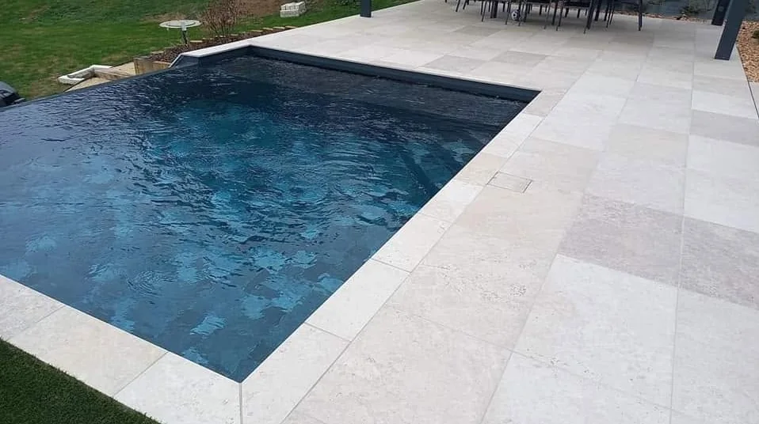
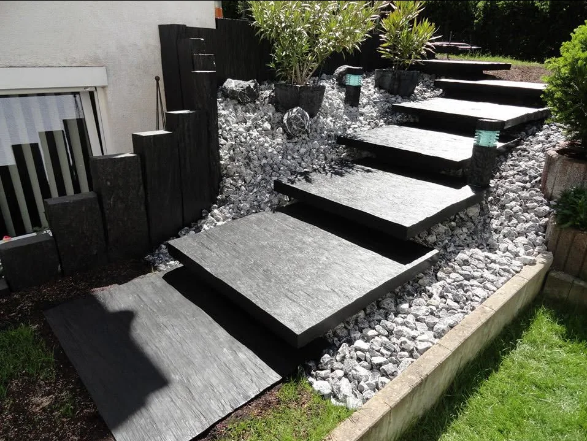
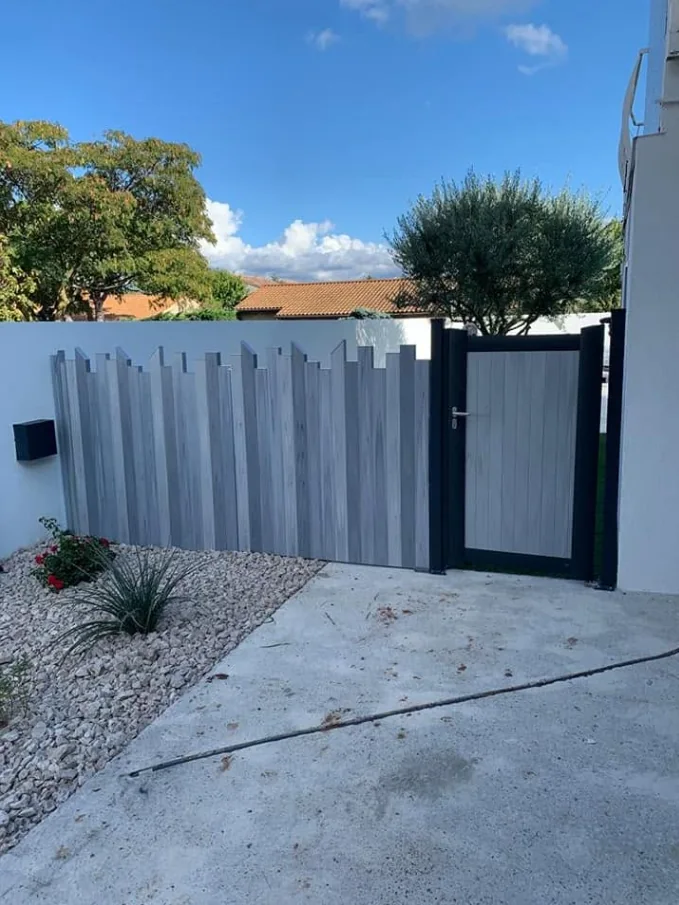
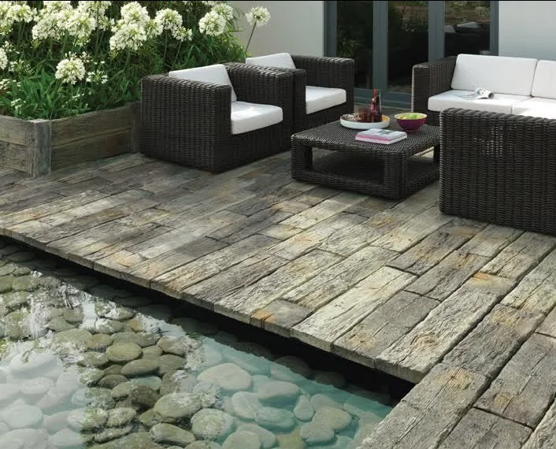
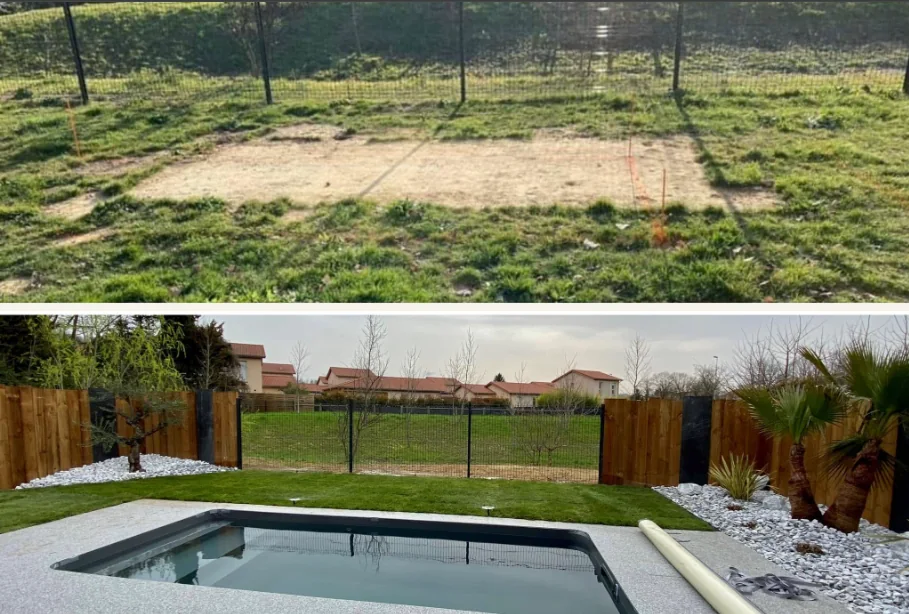

Aménagement piscine & terrasse
Composer les abords de piscine, organiser les circulations et intégrer les zones de détente dans un ensemble harmonieux.

Un extérieur réussi ne se limite pas à une belle plantation ou à une terrasse bien posée. Il naît d’un dialogue entre les usages, la maison, le sol, l’eau, la lumière et l’entretien futur.

Circulations, niveaux, végétaux, bois, pierre, eau et intimité sont pensés ensemble pour créer un jardin cohérent, agréable à regarder et simple à vivre au quotidien.

Composer les abords de piscine, organiser les circulations et intégrer les zones de détente dans un ensemble harmonieux.

Créer une terrasse confortable et durable, avec une structure adaptée, des finitions propres et une continuité naturelle entre maison et jardin.

Intégrer un espace bien-être dans le jardin avec les bons accès, la bonne intimité, des supports techniques fiables et un rendu harmonieux.

Structurer les accès, stabiliser les cheminements et sélectionner des matériaux cohérents avec l'architecture et les contraintes du terrain.

Travailler les volumes végétaux, les massifs, les essences et les sols pour créer un jardin vivant, lisible et adapté au climat local.

Délimiter, protéger et préserver l'intimité du jardin avec des solutions alignées sur le style de l'aménagement extérieur.

Créer un point d'eau équilibré, esthétique et intégré au paysage, en tenant compte de l'emplacement, des matériaux et de l'entretien.

Coordonner les étapes, soigner les raccords, contrôler les détails et livrer un extérieur prêt à vivre, sans rupture entre conception et réalisation.